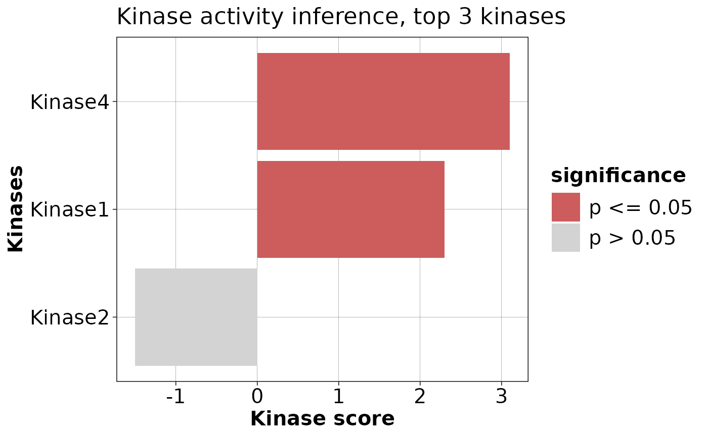

`plotKinaseDE` generates a bar plot of the top kinases associated
with the differentially expressed genes based on their scores.
Details
The function performs the following steps:
Adds a column for significance based on the p-value cutoff.
Adds a column for the sign of the score.
Filters out kinases with a score of 0.
Selects the top
nTopkinases by absolute score for each sign of the score.Creates a bar plot with the selected kinases.
Examples
# Example usage:
scoreTab <- data.frame(
source = c("Kinase1", "Kinase2", "Kinase3", "Kinase4"),
score = c(2.3, -1.5, 0, 3.1),
p_value = c(0.01, 0.2, 0.05, 0.03)
)
plotKinaseDE(scoreTab, nTop = 3, pCut = 0.05)
